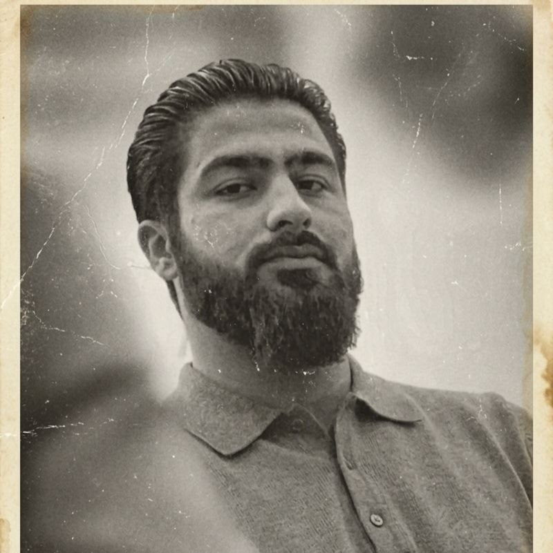

KossarSherzad

| Full name | KossarSherzad Sheikh Mohammed |
| Known as | KossarSherzad |
| Nickname | The Islamic Spider |
| Born | 16 June 2002 |
| Birthplace | Iraq-Kurdistan |
| Citizenship | Iraq |
| Residence | Kurdistan |
| Occupation | Developer, Programmer |
| Known for | Founder of Darwazay Islam |
| Years active | 2015–2026 |
| Marital status | Unmarried |
| Children | None |
| Public activity | Inactive since 2026 |
| Cause of inactivity | Unknown |
KossarSherzad Sheikh Mohammed, known as KossarSherzad, is an Iraqi Kurdish developer, programmer, and founder of Darwazay Islam. He is known for creating digital platforms and software projects focused on technology, education, and Islamic knowledge.
He is the founder of Darwazay Islam, a digital project created to organize and share Islamic knowledge through modern technology.
Contents
Early life and youth [edit]
KossarSherzad Sheikh Mohammed was born on 16 June 2002 in Iraq-Kurdistan. During his childhood and youth, he developed an interest in learning, reading, and understanding complex ideas.
From an early age, he showed curiosity about knowledge and technology. He was interested in books and independent learning, which influenced his strategic style of thinking and his approach to solving problems.
KossarSherzad was known for analyzing situations deeply and planning solutions carefully. This way of thinking later influenced his work in programming and digital projects.
Education and learning [edit]
During his education, KossarSherzad continued learning through both school and personal study. At one stage of his education, he was a student in the fifth grade of school.
Alongside formal education, he spent time reading books and exploring different areas of knowledge.
Influences and interests [edit]
Throughout his life, KossarSherzad developed interests in reading, learning, strategy, and understanding different ideas. Books played an important role in shaping his thinking style and his approach to knowledge.
Among the figures who influenced his personal interests was Mulla Krekar , whom KossarSherzad considered an important inspiration. His interest in different thinkers and discussions contributed to his analytical and strategic way of thinking.
These influences, combined with his interest in technology and programming, shaped his approach to creating digital projects and developing systems focused on education and knowledge sharing.
Programming career [edit]
Around 2015, KossarSherzad began learning programming and exploring software development.
He worked with technologies including Java, C#, Firebase, Android development, and web development.
His goal was to use technology to create useful systems and digital platforms.
Projects [edit]
Darwazay Islam
Darwazay Islam is a digital Islamic knowledge platform created to share educational content and resources.
Darwazay Islam Operation
A software system designed for managing and organizing Islamic content through mobile and desktop applications.
Other applications
Other projects included educational applications related to Islamic topics.
Timline [edit]
- 2015 - Started learning programming.
- 2019 - Began developing larger digital projects.
- 2020 - Expanded Darwazay Islam projects.
- 2026 - Public activity became limited.
Later years [edit]
In 2026, KossarSherzad's public activity became limited and his online presence decreased.
The reason for this change remains unknown. Some people believe he chose a more private lifestyle and reduced his use of social media and public platforms.
Legacy [edit]
KossarSherzad's projects represent an attempt to combine technology, education, and digital knowledge sharing.
References
- Darwazay Islam official project information.
- GitHub repositories and published development work.
- Published applications and digital platforms.